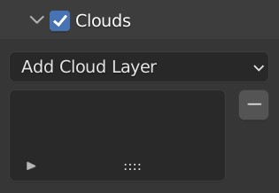
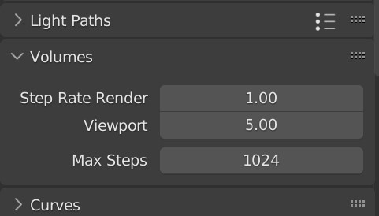

Clouds Panel
The clouds panel is located in the atmosphere panel. To enable clouds, check the check box in the clouds panel header.

If you used the Adjust Cycles Settings operator, the viewport step rate will be set to 5 to speed up interactive rendering. This will make clouds look less detailed and also less dense, so it is a good idea to occasioanlly turn the step rate down to preview what the clouds will look like in the final render.

Cloud Layer Types
Warning
Do not translate the cloud domain in the z axis as this will cause the cloud shader to not malfunction. Control altitude using the settings.
Note
The domain settings are currently decoupled from the shader settings due to limitations regarding geometry nodes. Make sure to match the domain radius, height and altitude with the shader.
Generic Clouds
This cloud layer can be used to recreate many different types of clouds by altering the parameters. The cloud domain contains the cloud shader medium. It is a cylinder that follows the curvature of the planet when the radius is large enough, meaning clouds may extend over the horizon.
This cloud shader is more suited to softer clouds that don't have billow features, such as stratus and cirrus clouds.
Settings
Domain Radius
Radius of the cylindrical cloud domain.
Domain Height
Height of the cylindrical cloud domain.
Domain Altitude
The altitude of the domain.
Height
The overall depth of the cloud layer.
Altitude
The altitude of the cloud layer in the shader (should be identical to domain altitude).
Radius
The radius in which the cloud layer terminates completely (should match domain radius).
Inner Radius
The radius at which the cloud falloff begins.
Density
The overall scattering density of the cloud layer. Higher values yield thicker, darker looking clouds that let less light through.
Coverage
Controls the amount of cloud in the domain. A lower value produces smaller clouds with more spacing and vice versa for a higher value.
Scale
Controls how large each individual cloud is. Smaller values produce larger looking cloud features.
Base Roughness
Determines how smooth/turbulent the base of the clouds are.
Upper Roughness
Like base roughness, but for the top of the clouds. Clouds are typically rougher at the top.
Sharpness
Controls how abrupt the cloud edges are (which also makes the edges more dense).
Edge Darkness
Artificially increases the darkness of the exterior parts of the clouds, giving them a 'powder' look. This effect is more prominent when the step rate decreases, so be careful not to increase it too much or it will make the clouds look dark.
Dark Edge Sharpness
Defines the sharpness of the dark edges. Higher values will make the edges sharper, but also decrease the overall darkness.
Stretch Factor
This parameter stretches the cloud shader domain, causing clouds either to look flatter or taller. Higher values will make the clouds look flatter and vice versa. This can be used to create flatter cirrus or stratus clouds.
Billow Clouds
This cloud layer is similar to generic clouds, but uses a billow fractal to produce cloud shapes found more often in in cumulus clouds.
Settings
Domain Radius
Radius of the cylindrical cloud domain.
Domain Height
Height of the cylindrical cloud domain.
Domain Altitude
The altitude of the domain.
Height
The overall depth of the cloud layer.
Altitude
The altitude of the cloud layer in the shader (should be identical to domain altitude).
Radius
The radius in which the cloud layer terminates completely (should match domain radius).
Inner Radius
The radius at which the cloud falloff begins.
Density
The overall scattering density of the cloud layer. Higher values yield thicker, darker looking clouds that let less light through.
Coverage
Controls the amount of cloud in the domain. A lower value produces smaller clouds with more spacing and vice versa for a higher value.
Scale
Controls how large each individual cloud is. Smaller values produce larger looking cloud features.
Primary Billowness
Controls the strength of the billow pattern on the base shape of the cloud.
Secondary Billowness
Controls the strength of the billow pattern on the cloud details.
Sharpness
Controls how abrupt the cloud edges are (which also makes the edges more dense).
Edge Darkness
Artificially increases the darkness of the exterior parts of the clouds, giving them a 'powder' look. This effect is more prominent when the step rate decreases, so be careful not to increase it too much or it will make the clouds look dark.
Dark Edge Sharpness
Defines the sharpness of the dark edges. Higher values will make the edges sharper, but also decrease the overall darkness.
Cirrus 2D
High altitude strandy/wispy clouds. This cloud layer is a 2D approximation which works well at high altitudes.
Settings
Alttiude
The altitude of the cloud plane.
Density
Controls the strength of the clouds. Higher values look thicker and scatter more light.
Scale
The overall scale of the cloud shape features. Lower values are larger and higher values are smaller.
Softness
Controls how abrupt the cloud edges are.
Mist Volume
Ground level fog/mist that exponentially decays with altitude. Fog/mist usually occurs at night, dawn or dusk.
Settings
Radius
Radius of the cylindrical mist domain.
Depth
The height of the mist domain.
Density
The sea-level scattering desnity of the mist.
Exp Altitude
The altitude in which the density is 36.7% that of the sea-level density.
Base Altitude
The altitude that represents the zero height level for the exponential density. Since the exp altitude cannot be negative, if you would like the exp altitude to be lower than sea level, you can set the base altitude to a negative value.